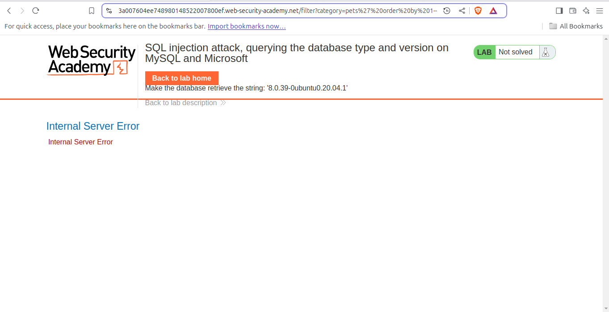
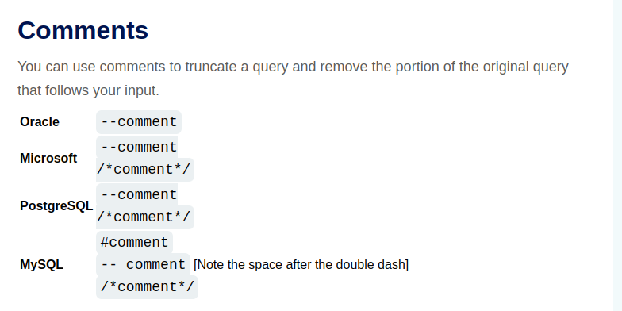

SQLi | آزمایشگاه - 3
Lab: SQL injection attack, querying the database type and version on MySQL and Microsoft
This lab contains a SQL injection vulnerability in the product category filter. You can use a UNION attack to retrieve the results from an injected query.To solve the lab, display the database version string.
You can visit from here.
Our Aim to display the database version.
So without wasting our time we will ACCESS THE LAB, as we know that the vulnerability is in product category filter.
We will click on:

As we want to get the verion of database of Microsoft, you can use cheat sheat, and will use UNION to get the version.
But, before perfoming UNION attack, we have to define the numbers of columns a database has.
So lets try adding ORDER BY METHOD:
But if you test it practically, it will show an error:
And that because of COMMENTS, COMMENTS can be different for different databases:
So we will now try to test every COMMENT, but none works except for this
' order by 1 -- its comment for MySQL, because for MySQL we have to give a space after --
So now lets see how much columns does it have, by giving this payload:
' order by 2 -- By testing this, we now know that it only uses 2 columns
From the above points we concluded that the databases has two columns and its MySQL database.So we need to use payload that is acceptable in MySQL:

' UNION SELECT SELECT @@version, null --